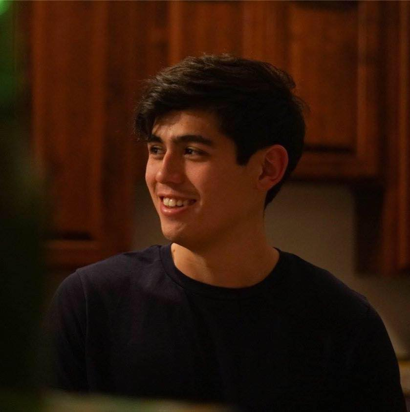

About Me
Daniel Joji Koons is a fresh graduate from Arizona State University, with a BA in the major of Digital Culture with a focus in media processing. His coursework was mainly focused in programming in a variety of languages, such as Java, C#, Git, and Processing. The subjects varied from topics like iOS development, web development, game design, and graphic design.
He is also very resourceful in using Adobe products, such as Adobe Premiere and Adobe After Effects, as well as game development engines such as GameMaker, Unity, and Unreal. His creative projects consist of photography, videography, video editing, and writing music.
Currently, he is pursuing a certificate in Full Stack Engineering through the University of Arizona, with hopes to enter a career in the software development industry.